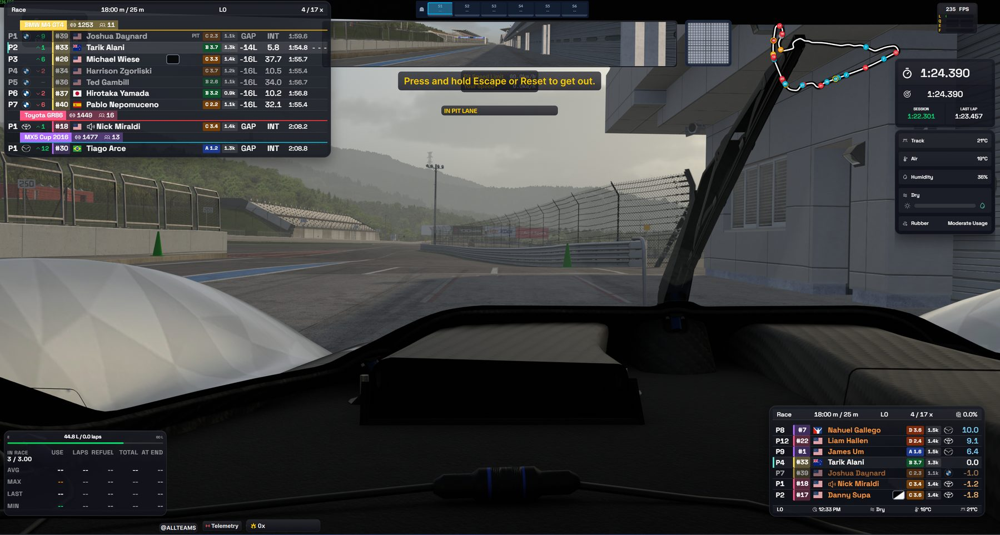

Standings
01Полная таблица заезда с разбивкой по классам, интервалами и лучшими кругами. Позиция в классе и в абсолюте — в одной строке.
Полная свобода настройки каждого элемента — от внешнего вида до отображаемых данных.


Включайте только то, что нужно в текущей сессии. Настраивайте виджеты под себя.
Полная таблица заезда с разбивкой по классам, интервалами и лучшими кругами. Позиция в классе и в абсолюте — в одной строке.
Относительное наложение используется для отображения того, какие гонщики находятся рядом с вами.
Расход за круг, остаток и запас до финиша с учётом текущего темпа. Подсказывает, сколько заливать на пит-стопе.
Панель, позволяющая отслеживать происшествия в режиме реального времени и просматривать их после гонки в повторе.

Температура трассы и воздуха, влажность. Видно, когда погода меняет темп заезда.

Схема трассы с позициями всех машин в реальном времени. Трафик и разрывы видно до того, как вы выйдете из поворота.
Газ, тормоз, сцепление и руль с историей последних секунд.

Клетчатый и другие флаги сессии крупно поверх экрана. Не пропустите финиш и смену состояния гонки.
Замеры на референсной конфигурации: Ryzen 9 9800X3D, RTX 5070TI, 1440p, 30-60 машин на трассе.
Одно ядро, полное стартовое поле.
Медиана по 60 сессиям, отдельный слой.
Каждый виджет захватывается отдельно.
Настрой всё под себя.
Одинаково удобно на любом экране.
Нажмите на карточку, чтобы рассмотреть интерфейс крупно.


Гонщикам, которым важна обстановка вокруг машины: Relative, Radar и Fuel дают нужные данные в поле зрения, не заслоняя трассу.
Стримерам, которым нужен читаемый эфир: отдельные виджеты можно собрать в собственный layout и настроить под захват в OBS.
Базовый набор бесплатный и без ограничений по времени: все десять виджетов, настройки и локальные пресеты. Подписка Pro добавляет облачную синхронизацию Layouts и командные пресеты.
Windows 10 и Windows 11, только 64-бит. Версий для macOS и Linux нет и не планируется: сам iRacing работает исключительно под Windows.
В наших замерах — в пределах погрешности: медиана −0.4 FPS при всех включённых виджетах. Оверлеи рисуются отдельными окнами поверх симулятора и не вмешиваются в его рендер-цикл.
Да. Виджеты захватываются и через Game Capture, и через Window Capture. Любой виджет можно исключить из захвата по отдельности — он останется видимым на вашем мониторе, но не попадёт в трансляцию.
Да: позиция, размер, масштаб, прозрачность, цвета классов, набор колонок, число строк и единицы измерения настраиваются отдельно у каждого виджета. Наборы расположений сохраняются как Layouts и переключаются горячей клавишей.
Для базового набора — нет. Приложение читает телеметрию локально и ничего не отправляет наружу. Аккаунт требуется только для облачной синхронизации Layouts между машинами и внутри команды.
Установка занимает минуту. Виджеты подхватывают телеметрию автоматически, как только iRacing выходит на трассу.